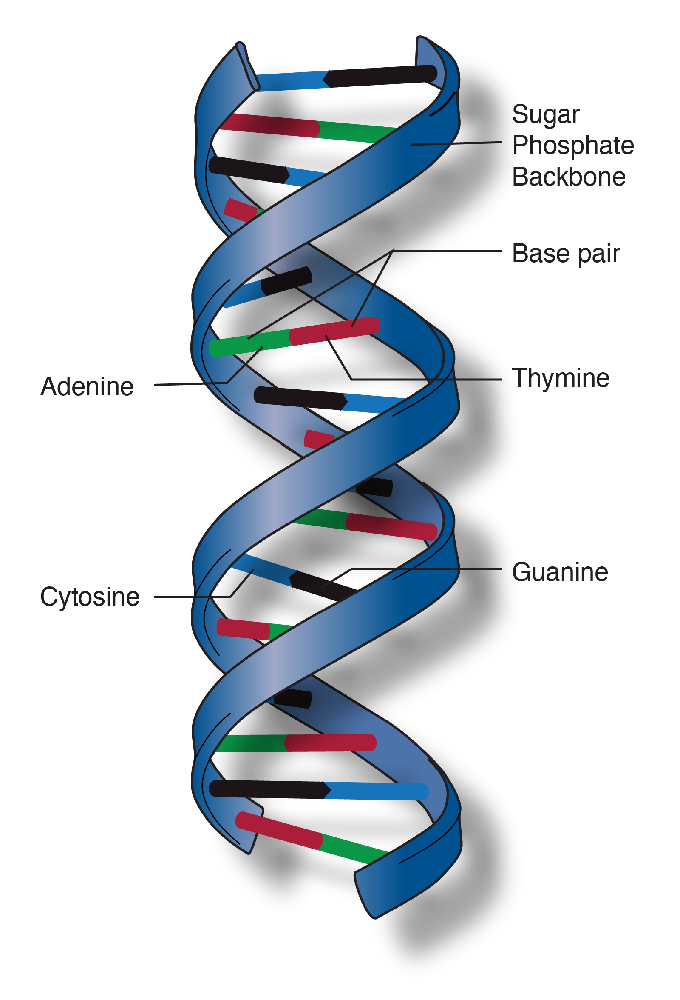

Genome
A genome is all genetic information of an organism. It consists of nucleotide sequences of DNA. The genome includes both the genes (the coding regions) and the noncoding DNA, as well as mitochondrial DNA and chloroplast DNA. The study of the genome is called genomics. The genomes of several organisms have been sequenced and genes analyzed. The Human Genome Project reported the sequencing of the entire genome for Homo sapiens in April 2003, although only 92% of the DNA was actually decoded. With advancements in technology that could handle sequencing of the many repetitive sequences found in human DNA that were not fully uncovered by the original Human Genome Project study, scientists reported the first end-to-end human genome sequence in March, 2022.
Chromosome
A chromosome is an organized package of DNA found in the nucleus of the cell. Different organisms have different numbers of chromosomes. Humans have 23 pairs of chromosomes--22 pairs of numbered chromosomes, called autosomes, and one pair of sex chromosomes, X and Y. Each parent contributes one chromosome to each pair so that offspring get half of their chromosomes from their mother and half from their father.
A chromosome is the structure housing DNA in a cell. Chromosomes are structurally quite sophisticated, containing elements necessary for processes such as replication and segregation. Each species has a characteristic set of chromosomes with respect to number and organization. For example, humans have 23 pairs of chromosomes--22 pairs of numbered chromosomes called autosomes, 1 through 22, and one pair of sex chromosomes, X and Y. Each parent contributes one chromosome of each pair to an offspring.
Deoxyribonucleic Acid (DNA)
DNA is the chemical name for the molecule that carries genetic instructions in all living things. The DNA molecule consists of two strands that wind around one another to form a shape known as a double helix. Each strand has a backbone made of alternating sugar (deoxyribose) and phosphate groups. Attached to each sugar is one of four bases--adenine (A), cytosine (C), guanine (G), and thymine (T). The two strands are held together by bonds between the bases; adenine bonds with thymine, and cytosine bonds with guanine. The sequence of the bases along the backbones serves as instructions for assembling protein and RNA molecules.
Double helix is the description of the structure of a DNA molecule. A DNA molecule consists of two strands that wind around each other like a twisted ladder. Each strand has a backbone made of alternating groups of sugar (deoxyribose) and phosphate groups. Attached to each sugar is one of four bases: adenine (A), cytosine (C), guanine (G), or thymine (T). The two strands are held together by bonds between the bases, adenine forming a base pair with thymine, and cytosine forming a base pair with guanine.

Gene
The gene is the basic physical unit of inheritance. Genes are passed from parents to offspring and contain the information needed to specify traits. Genes are arranged, one after another, on structures called chromosomes. A chromosome contains a single, long DNA molecule, only a portion of which corresponds to a single gene. Humans have approximately 20,000 genes arranged on their chromosomes.
A gene could be as short as a few hundred base pairs or as long as many thousands. The BRCA1 and BRCA2 genes, for instance, are very long and huge. The beta-globin gene, on the other hand, is only a few hundred of these nucleotides. A gene, in a common way of thinking about it, is a packet of information coding generally for a protein.

Exon
An exon is the portion of a gene that codes for amino acids. In the cells of plants and animals, most gene sequences are broken up by one or more DNA sequences called introns. The parts of the gene sequence that are expressed in the protein are called exons, because they are expressed, while the parts of the gene sequence that are not expressed in the protein are called introns, because they come in between--or interfere with--the exons.
Exons are that part of the RNA that code for proteins. Now, RNA, when it first gets transcribed, is a very, very long piece of RNA molecule. And really, the important parts of that RNA are the exons. There are large, large chunks of RNA that get excised out. Now, it's important to remember that because I use the term excised doesn't mean that exons go away. The exons are what stay in the mature mRNA and eventually code for amino acids.
Intron
An intron is a portion of a gene that does not code for amino acids. In the cells of plants and animals, most gene sequences are broken up by one or more introns. The parts of the gene sequence that are expressed in the protein are called exons, because they are expressed, while the parts of the gene sequence that are not expressed in the protein are called introns, because they come in between the exons.
Introns are very large chunks of RNA within a messenger RNA molecule that interfere with the code of the exons. And these introns get removed from the RNA molecule to leave a string of exons attached to each other so that the appropriate amino acids can be encoded for.
Coding DNA Sequence (CDS)
The coding region of a gene, also known as the coding DNA sequence (CDS), is the portion of a gene's DNA or RNA that codes for protein. Studying the length, composition, regulation, splicing, structures, and functions of coding regions compared to non-coding regions over different species and time periods can provide a significant amount of important information regarding gene organization and evolution of prokaryotes and eukaryotes. This can further assist in mapping the human genome and developing gene therapy.
Untranslated Region (UTR)
An untranslated region (or UTR) refers to either of two sections, one on each side of a coding sequence on a strand of mRNA. If it is found on the 5' side, it is called the 5' UTR (or leader sequence), or if it is found on the 3' side, it is called the 3' UTR (or trailer sequence). mRNA is RNA that carries information from DNA to the ribosome, the site of protein synthesis (translation) within a cell. The mRNA is initially transcribed from the corresponding DNA sequence and then translated into protein. However, several regions of the mRNA are usually not translated into protein, including the 5' and 3' UTRs.

Start Codon
The start codon is the first codon of a messenger RNA (mRNA) transcript translated by a ribosome. The start codon always codes for methionine in eukaryotes and Archaea and a N-formylmethionine (fMet) in bacteria, mitochondria and plastids. The most common start codon is AUG (i.e., ATG in the corresponding DNA sequence).
The start codon is often preceded by a 5' untranslated region (5' UTR). In prokaryotes this includes the ribosome binding site.
Stop Codon
A stop codon is a trinucleotide sequence within a messenger RNA (mRNA) molecule that signals a halt to protein synthesis. The genetic code describes the relationship between the sequence of DNA bases (A, C, G, and T) in a gene and the corresponding protein sequence that it encodes. The cell reads the sequence of the gene in groups of three bases. Of the 64 possible combinations of three bases, 61 specify an amino acid, while the remaining three combinations are stop codons.
Transcription
Transcription is the process of making an RNA copy of a gene sequence. This copy, called a messenger RNA (mRNA) molecule, leaves the cell nucleus and enters the cytoplasm, where it directs the synthesis of the protein, which it encodes.
Transcription is one of the fundamental processes that happens to our genome. It's the process of turning DNA into RNA. And you may have heard about the central dogma, which is DNA, to RNA, to protein. Well, transcription refers to that first part of going from DNA to RNA. And we transcribe DNA to RNA in specific places. The most popular places are those things that code for these protein-encoding genes. But there are a whole host of other RNAs that get transcribed, like transfer RNAs and ribosomal RNAs, that do other functions that are genomic as well.
Ribonucleic Acid (RNA)
Ribonucleic acid (RNA) is a molecule similar to DNA. Unlike DNA, RNA is single-stranded. An RNA strand has a backbone made of alternating sugar (ribose) and phosphate groups. Attached to each sugar is one of four bases--adenine (A), uracil (U), cytosine (C), or guanine (G). Different types of RNA exist in the cell: messenger RNA (mRNA), ribosomal RNA (rRNA), and transfer RNA (tRNA). More recently, some small RNAs have been found to be involved in regulating gene expression.
RNA, or ribonucleic acid, is a nucleic acid that is similar in structure to DNA but different in subtle ways. The cell uses RNA for a number of different tasks, one of which is called messenger RNA, or mRNA. And that is the nucleic acid information molecule that transfers information from the genome into proteins by translation. Another form of RNA is tRNA, or transfer RNA, and these are non-protein encoding RNA molecules that physically carry amino acids to the translation site that allows them to be assembled into chains of proteins in the process of translation.
Messenger RNA (mRNA)
Messenger RNA (mRNA) is a single-stranded RNA molecule that is complementary to one of the DNA strands of a gene. The mRNA is an RNA version of the gene that leaves the cell nucleus and moves to the cytoplasm where proteins are made. During protein synthesis, an organelle called a ribosome moves along the mRNA, reads its base sequence, and uses the genetic code to translate each three-base triplet, or codon, into its corresponding amino acid.
Messenger RNAs, also known as mRNA, are one of the types of RNA that are found in the cell. This particular one, like most RNAs, are made in the nucleus and then exported to the cytoplasm where the translation machinery, the machinery that actually makes proteins, binds to these mRNA molecules and reads the code on the mRNA to make a specific protein. So in general, one gene, the DNA for one gene, can be transcribed into an mRNA molecule that will end up making one specific protein.
Translation
Translation is the process of translating the sequence of a messenger RNA (mRNA) molecule to a sequence of amino acids during protein synthesis. The genetic code describes the relationship between the sequence of base pairs in a gene and the corresponding amino acid sequence that it encodes. In the cell cytoplasm, the ribosome reads the sequence of the mRNA in groups of three bases to assemble the protein.
"Translation" literally means "to carry across"; that's what translation means. In this case, what is being carried across is information that originally was in the genome, enshrined in DNA, then gets transcribed into messenger RNA. And then that information is translated from the messenger RNA to a protein. So we're taking the same information, but it's going from one form to another; a nucleic acid code to an amino acid code in a protein. That translation is done not in individual letters. It's very much like the human language or any other language that, in this case, all the words are the same length. They're all three words long, and the reader in this case is something called a ribosome, which is this big, multi-subunit molecular machine that travels along the mRNA, and it reads much like a person reading Braille does. It reads along, detects what are these letters underneath it, and when it detects what those three letters are, it decides what the amino acid is supposed to be that it adds to the growing amino acid chain, polypeptide chain, to become a protein. Those mRNA letters are called a codon, and each codon codes for a different amino acid. And eventually those amino acids are all joined together to assemble a protein.
Amino Acid
Amino acids are a set of 20 different molecules used to build proteins. Proteins consist of one or more chains of amino acids called polypeptides. The sequence of the amino acid chain causes the polypeptide to fold into a shape that is biologically active. The amino acid sequences of proteins are encoded in the genes.
Amino acids are the small molecules that are put together to make proteins. And so there are 20 different amino acids. You can think of it as different flavors that get linked together like beads on a string to make long chains that we call polypeptides, and those are the building blocks of proteins. And the really neat thing about the amino acids is that when they're linked together, they fold to make the final shape of the protein. And it's the shape of the protein that really dictates what it can do in the cell.
Polypeptide
A peptide is one or more amino acids linked by chemical bonds. The term also refers to the type of chemical bond that joins the amino acids together. A series of linked amino acids is a polypeptide. The cell's proteins are made from one or more polypeptides.
The term "peptides" refers to a series of amino acids linked together. Amino acids are the basic unit that make proteins, and a short series of those--short chain of amino acids--is called a peptide. Peptides are then organized in more complex structures, which are called proteins. And proteins are the building blocks of a cell.
Protein
Proteins are an important class of molecules found in all living cells. A protein is composed of one or more long chains of amino acids, the sequence of which corresponds to the DNA sequence of the gene that encodes it. Proteins play a variety of roles in the cell, including structural (cytoskeleton), mechanical (muscle), biochemical (enzymes), and cell signaling (hormones). Proteins are also an essential part of diet.
Many genes in the genome code for proteins. These are molecules of amino acids linked together in a very specific sequence that produce a functional molecule that can fold up to either be an enzyme, or a formed part of the structure of the cell, or to be secreted and act as signals. In all, there are thousands and thousands of proteins that your cells and body makes every single day. In the human genome, there are approximately 20,000 genes that code for proteins.